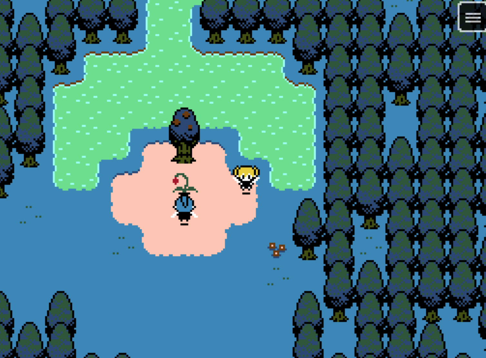
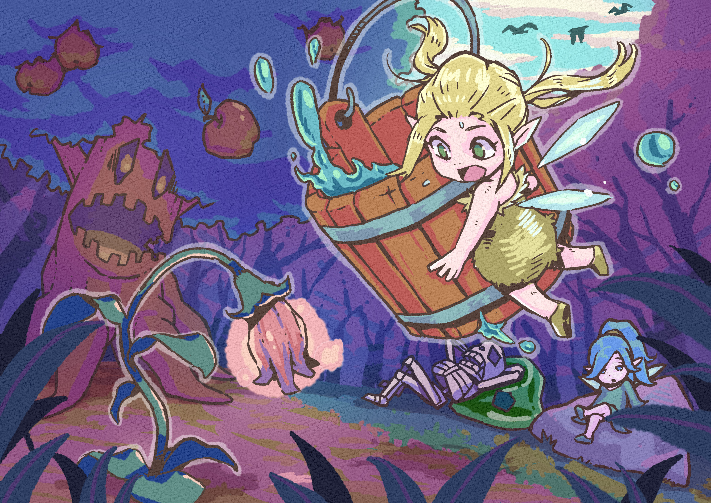

Creative workshop
つくりかけの世界へ。
戦闘のないRPGや、小さな物語のある作品を制作しています。 完成品だけではなく、育っていく過程も含めて楽しめる創作工房です。
Works
作品
新しい作品から順に並べています。
準備中 / Next game
準備中の作品
次のゲームや小さな物語が形になってきたら、 ここに作品画像と紹介文を追加していきます。
Creator
制作者
作品をつくっている人のこと。
いわみしょう
個人ゲームクリエイター、イラストレーター。 戦闘のないRPGや、小さな物語のある作品を制作しています。
現在はゲーム制作を中心に、 キャラクターやグッズの展開にも取り組んでいます。
Links
リンク
公開先や制作記録をまとめています。